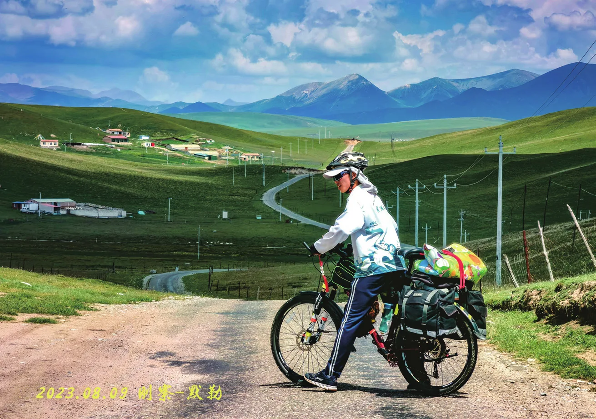

恍回首
原刊134


一
我为什么会加入协会，或许，要从小时候的一个视频说起——约摸十人左右的小队在西北戈壁中穿梭，一日奔波后，入住到一家藏身于荒漠之中的旅店。收到入取通知书的那一刻在轻轻打开附带的“初入燕园”新生入学手册的那一刻，刚好翻到了社团介绍那一页。哇塞！
居然还有北京大学自行车协会！这个好酷！怎么加呀？哦哦原来还要等到百团大战，那我先期待一波！
二
故事从凤凰岭的篝火开始，那时还只是一个报了好多社团什么都想尝试一下的萌新，对冬游暑期还没有什么特别的感觉，车协，对我来说，也只是北大众多社团中比较有趣的一个。然而，就像很多人所经历的那样，哪怕初始时有很多种选择，也选择了很多种类型，然历尽千帆，待铅华褪去，留下的往往只是最重要的那一个、两个，也许是学生会、团委、学工，也许是学术、科研，简简单单的专注于课业，又或许……
三
冬游，大概是许多人第一次难忘的小队骑行体验。冬游，是我不可磨灭的，白月光。23冬游A组，超乎预期的完美，甚至没有留下任何遗憾，如果有，那一定是我当时还没考过押后。
冬游的太多美好回忆，以至于我常常回想起，从苏州，经太湖至西湖，翻过雁荡山，最后乘船渡江到达温州，一路的点点滴滴，和承载有哪些美好回忆的图片。夸夸九刀，实在拍的太好啦！弹指一挥间，转眼已是23冬游一周年，撰写此文时，已在24冬游的出发点——长沙。
如果说冬游路上留下了太多美好，那么后冬游时代，依旧值得我们去珍惜。曾经以为冬游结束，缘分尽了，也就散了；我也曾傻傻地将置顶了一整个寒假的群聊化为普通群聊，只是没想到在散组后的每一天，群里总能冒出99甚至999+，好像有一种惯性一样，不可抗拒。
于是她甚至一直保持置顶了直到将近暑期——或许有些遗憾吧，往日繁忙的群聊也会有沉寂的一天。好像总有这么一个时刻，我们终将需要面对，即使所有人都在尽力去避免。甚至到在暑期团刚刚成立的那一段时间里，我仍把冬游组员们的情感置于团众之上，只是群里也再很少有人说话了，慢慢的，可能也就淡了吧。
不过还好，即使沉寂了，也还会时常冒出一些小小的惊喜，缓解这份小小的遗憾。
四
暑期，或许是人生的一段高光，也许又充满遗憾。好像有很多话想说，但又不知道如何去叙述，去剖析。但我不想剖析，偶尔甚至觉得自己有些慢热，有些遗憾，很多愧疚，或许需要用一整个后暑期时代来弥补。
去暑期之前总能听到许多老会员分享自己暑期路上的可怕故事，但我们团好像总是平平淡淡的度过了每一天，除了扎胎有点多之外，每一天都超乎预期的顺利——没有不可调和的矛盾，也没有各种老会员们口中的异常传奇的经历。听说冬游是一次小队骑行最合适的时间长度，因为大家才刚刚熟悉，在感情刚达到峰值时就分别，每个人的缺点还不会暴露出来；然而暑期由于时间较长，到后期每个人的缺点不可避免的将会呈现出来，那时，可能就会引起矛盾。
好在，前人的话并不总是正确的，至少只是片面的。也许有，但远远不足以畏惧到那种程度。很多事情，经历过，才会知道。嗟乎！欲明之，难明矣！
还是有些执念吧。既然这样，那就放下执念，留下一份队记，以便来者观之：2023.7.21DAY-1队记：小哥地点：平凉，崆峒山天气：晴平凉休整（见第30页“崆峒山游记”）